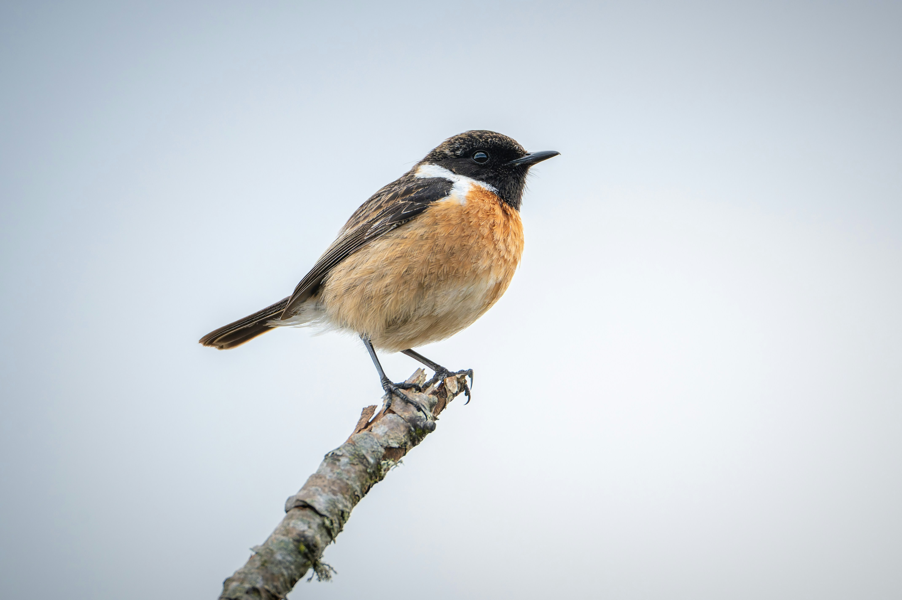

The Common Stonechat is a small, upright songbird often seen perched prominently on shrubs, grass stems, fences, and other exposed points. Adult males typically have a dark head, orange breast, and pale collar, while females are more subdued. It feeds mainly on insects and other small invertebrates and prefers open habitats with scattered vegetation.